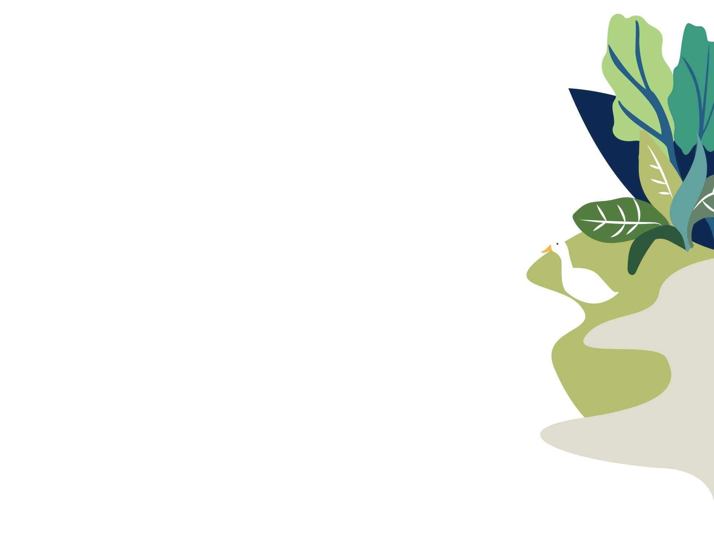
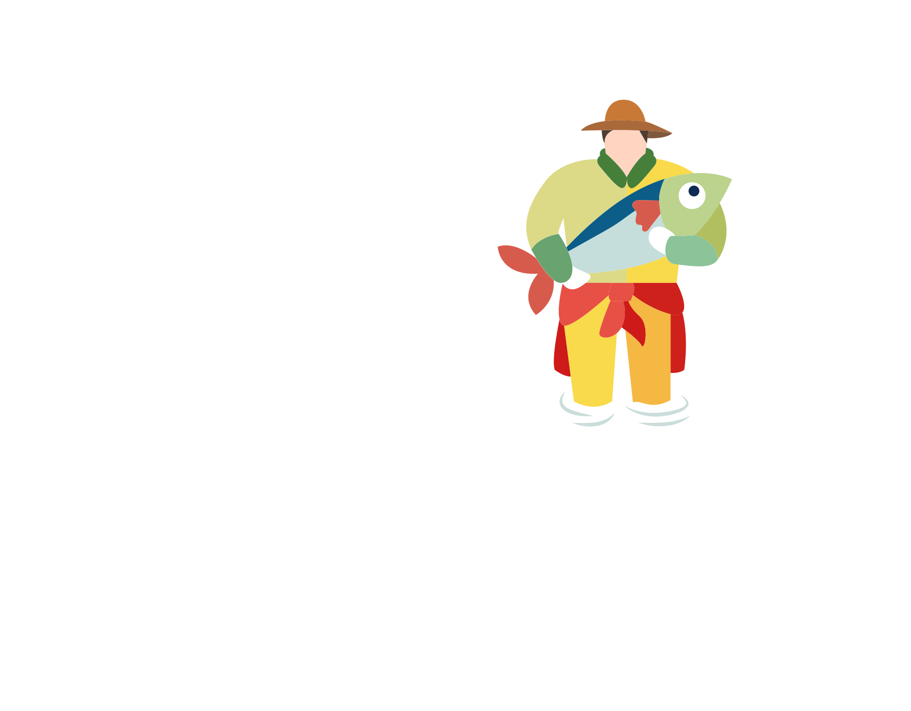
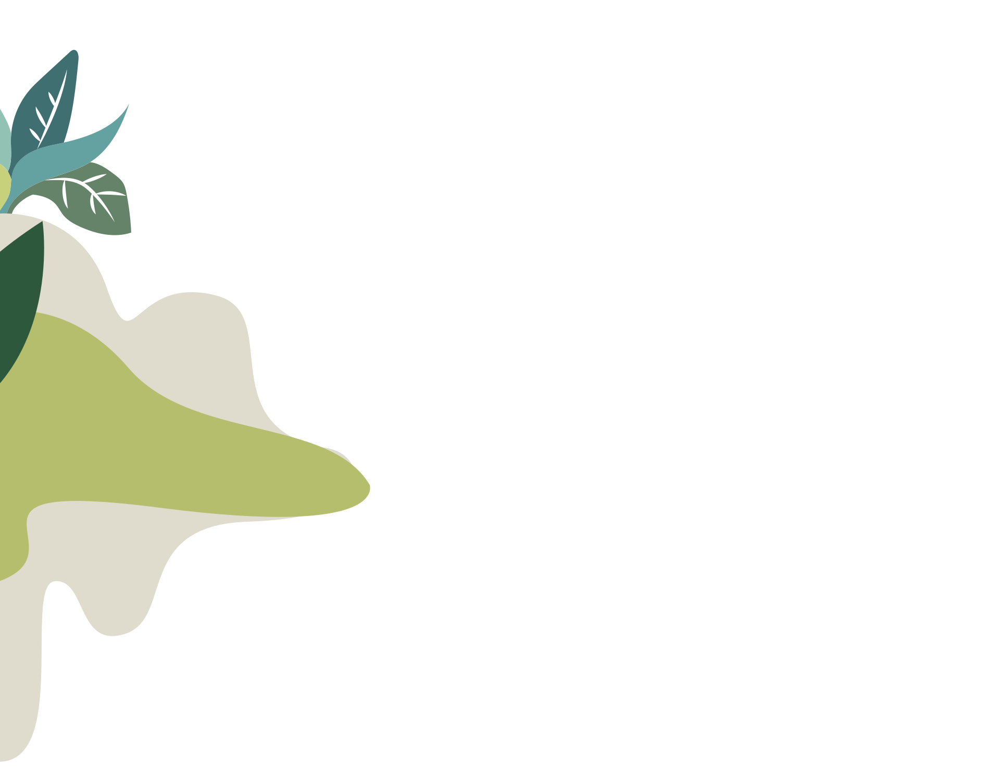
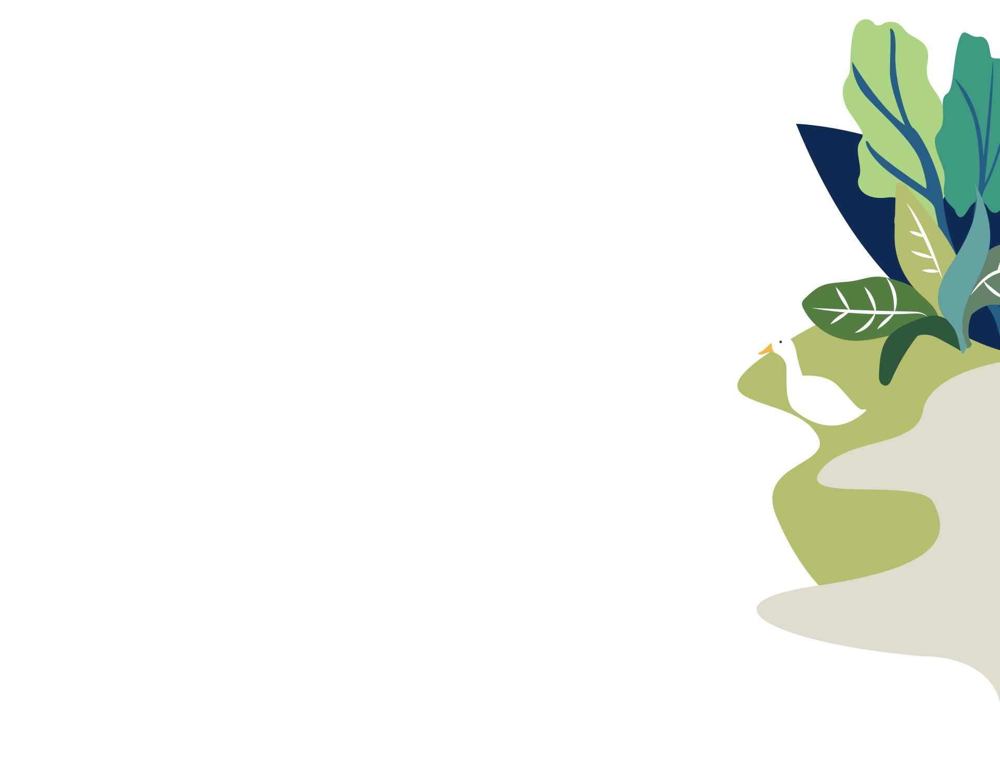
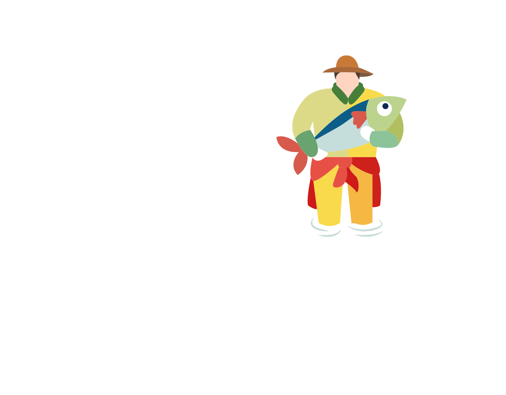
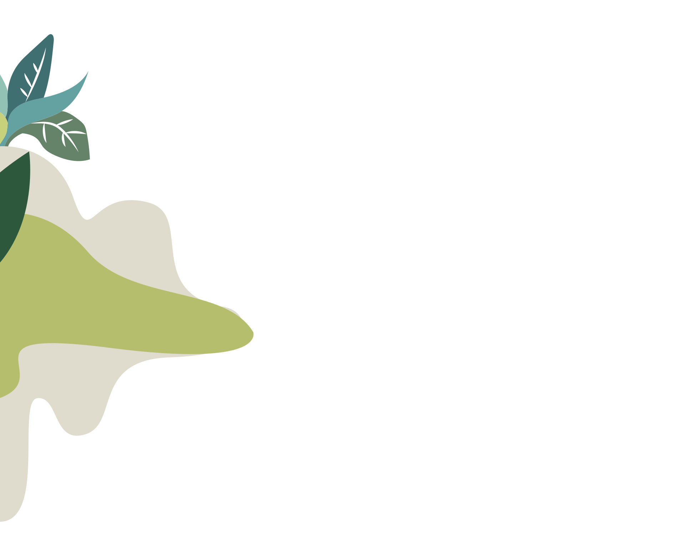
วิถีทฤษฎีใหม่
หลักการสำคัญของทฤษฎีใหม่
คือการบริหารจัดการทรัพยากรโดยเฉพาะดินและน้ำที่มีอยู่จำกัดให้เกิด
ประโยชน์สูงสุด
เพื่อให้เกษตรกรสามารถดำเนินชีวิตอยู่ได้อย่างพอเพียง โดยเน้นการพึ่งพาตนเองให้มากที่สุด
เหตุที่เรียก "ทฤษฎีใหม่"


มีการบริหารและจัดแบ่งที่ดินขนาดเล็กออกเป็นสัดส่วนที่ชัดเจน เพื่อประโยชน์สูงสุดของเกษตรกร
มีการคำนวณโดยหลักวิชาการ เกี่ยวกับปริมาณน้ำที่จะเก็บกักให้พอเพียงต่อการเพาะปลูกได้อย่างเหมาะสมตลอดปี

มีการวางแผนที่สมบูรณ์แบบ ประกอบด้วย 3 ขั้นตอน
ขั้นตอนของทฤษฎีใหม่การทำเกษตรทฤษฎีใหม่มี 3 ขั้นตอน

ขั้นที่ 1 เป็นการอผลิตแบบพึ่งตนเองด้วยวิธีง่ายๆ ค่อยเป็นค่อยไปตามกำลัง พอมี พอกินไม่อดอยาก


ขั้นที่ 2 เกษตรกรรวมพลังกันในรูปกลุ่มหรือสหกรณ์ร่วมแรงในเรื่องของการผลิต การตลาด การเป็นอยู่ สวัสดิการ การศึกษา สังคม และศาสนา
 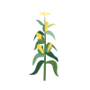
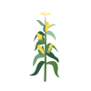
ขั้นที่ 3 ร่วมมือกับแหล่งเงินและพลังงาน ตั้งและบริการโรงสีตั้งและบริการร้านสหกรณ์ ช่วยกันลงทุน ช่วยกันพัฒนาคุณภาพชีวิตของประชาชนในชนบท ซึ่งมิใช่ทำอาชีพเกษตรเพียงอย่างเดียว
ประโยชน์การขุดสระน้ำ
การสร้างแหล่งน้ำ ถือเป็นการสร้างหลักประกันให้กับเกษตรกรได้เป็นอย่างดี เนื่องด้วยความจำเป็นในหลายๆ ประการและ เตรียมพร้อมกับความแห้งแล้ง ในการกักเก็บน้ำ เพื่อใช้ในการเกษตรและการบริโภคนอกจากนี้ยังใช้เลี้ยงสัตว์น้ำและนำมาอุปโภคบริโภคได้ ซึ่งทำให้เราสามารถทำการเกษตรได้ทั้งปี

 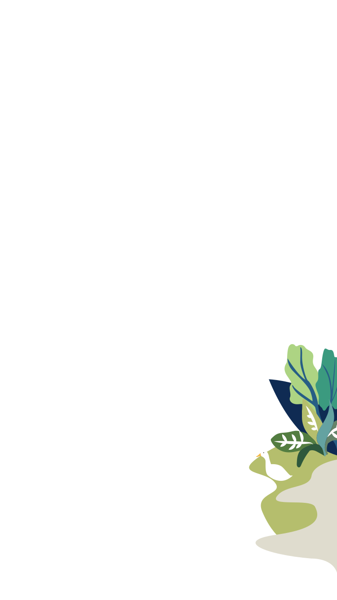
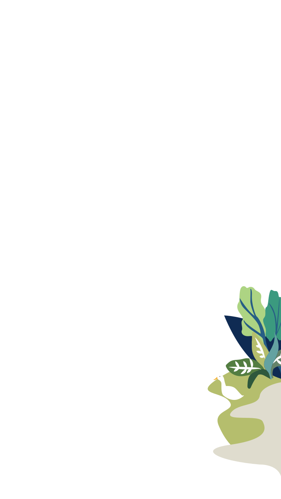


วิถีทฤษฎีใหม่
หลักการสำคัญของทฤษฎีใหม่
คือการบริหารจัดการทรัพยากรโดยเฉพาะดินและน้ำที่มีอยู่จำกัดให้เกิด
ประโยชน์สูงสุด
เพื่อให้เกษตรกรสามารถดำเนินชีวิตอยู่ได้อย่างพอเพียง โดยเน้นการพึ่งพาตนเองให้มากที่สุด
เหตุที่เรียก "ทฤษฎีใหม่"
มีการบริหารและจัดแบ่งที่ดินขนาดเล็กออกเป็นสัดส่วนที่ชัดเจน เพื่อประโยชน์สูงสุดของเกษตรกร
มีการคำนวณโดยหลักวิชาการ เกี่ยวกับปริมาณน้ำที่จะเก็บกักให้พอเพียงต่อการเพาะปลูกได้อย่างเหมาะสมตลอดปี
มีการวางแผนที่สมบูรณ์แบบ ประกอบด้วย 3 ขั้นตอน
ขั้นตอนของทฤษฎีใหม่การทำเกษตรทฤษฎีใหม่มี 3 ขั้นตอน
 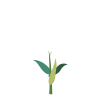
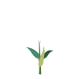
ขั้นที่ 1 เป็นการผลิตแบบพึ่งตนเองด้วยวิธีง่ายๆ ค่อยเป็นค่อยไปตามกำลัง พอมี พอกินไม่อดอยาก
ขั้นที่ 2 เกษตรกรรวมพลังกันในรูปกลุ่มหรือสหกรณ์ ร่วมแรงในเรื่องของการผลิต การตลาด การเป็นอยู่ สวัสดิการ การศึกษา สังคม และศาสนา


ขั้นที่ 3 ร่วมมือกับแหล่งเงินและพลังงาน ตั้งและบริการโรงสีตั้งและบริการ ร้านสหกรณ์ ช่วยกันลงทุน ช่วยกันพัฒนาคุณภาพชีวิตของประชาชนในชนบท ซึ่ง มิใช่ทำอาชีพเกษตรเพียงอย่างเดียว

ประโยชน์การขุดสระน้ำ
การสร้างแหล่งน้ำ ถือเป็นการสร้างหลักประกันให้กับเกษตรกรได้เป็นอย่างดี เนื่องด้วยความจำเป็นในหลายๆ ประการและ เตรียมพร้อมกับความแห้งแล้ง ในการกักเก็บน้ำ เพื่อใช้ในการเกษตรและการบริโภคนอกจากนี้ยังใช้เลี้ยงสัตว์น้ำและนำมาอุปโภคบริโภคได้ ซึ่งทำให้เราสามารถทำการเกษตรได้ทั้งปี